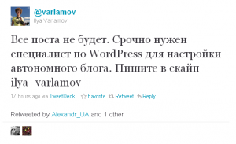
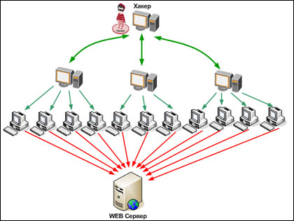

ЖЖ на этой неделе не работал уже дважды. Платформа эта в России довольно широко распространена и пользователи в том числе топовые начинают нервничать. Лебедев пишет про социальную рекламу, fima-psuchopadt готовит запасной аэродром. Варламов опять же интересуется.

Сейчас правда отлегло. ЖЖ вроде опять работает. Из-за того, что никаких социально значимых событий в блогосфере в последние дни особо не наблюдалось (наскучивший уже 31-флешмоб я всерьез не принимаю) возникают самые разные теории нынешнего DDOS.
Теории заговора
1. Коммунисты высказались, что таким образом некие силы пытаются контролировать интернет. «Сделать интернет управляемым невозможно, поэтому апробируется политика «рубильника» — заметил первый зампред ЦК КПРФ, депутат Госдумы Иван Мельников.
2. Редактору этого блога кажется, что атака на блогоплатформу вполне может исходить от сторонников нынешнего премьер-министра. Ну типа президент у нас с айподом и твиттером, а гляньте: чик! и нету ничего. Я может и гоню, но ведь красиво было бы?
3. Так просто кто-то хулиганит. Это может быть и сама администрация ЖЖ (глядите нас зажимают), а может и просто скучающий миллиардер, где-нибудь на берегах туманного Альбиона.
Что такое DDOS?
Вспомнился анекдот: ходят по камере в тюрьме два уголовника. Один другому говорит: Николай, ты знаешь что такое теория отностильности? Конечно, Леонид! Объясни, пожалуйста. Вот ты сейчас что в камере делаешь? Хожу. Правильно, но на самом деле ты сидишь.
Такая же самая история и с ддосом.
Сейчас ты считаешь эти строки, а на самом деле вполне вероятно — досишь.
Типичная дос-атака заключается (если упростить) в следующем: на сайт-жертву одновременно пытаются зайти много пользователей. «Много» в случае дос-атаки значит несколько тысяч. Этого хватит для среднего сайта. Проекты серьезней требуют более мощной атаки. Так в при последних атаках на ЖЖ ведётся речь о 100 тысячах таких «пользователей». Наиболее же мощная из дос-атак была зафиксирована в октябре прошлого года её «мощность» в условных пользователях равнялась 1 миллиону. Сервер на котором работает сайт не в состоянии обработать большое количество запросов и просто отключается.

Откуда берутся теоретические пользователи? Хотя в случае с ЖЖ и говорят о том, что атака идёт с зарубежных IP атакующим «пользователем» можете быть и вы. Вернее не конкретно вы, а ваш компьютер. Который может являться частью ботнета — группы подключенных к интернету компьютеров, которые по команде владельца ботнета начинают «заходить» на сайт жертву. Разумеется ни о каком открытии страничек в браузере речь в этом случае не идёт, компьютер незаметно от вас посылает и запрашивает пакеты данных.
Как создаются ботнеты?
Самый наверное распространённый способ — хакеры создают вирус, который используя уязвимости операционных систем распространяется по миру и расселяется на тысячах компьютеров. Причем времена когда вирусы мигали лампочками дисковода давно ушли. Современным вирусам на обязательно себя обнаруживать. Такой компьютер просто ждёт своего часа и по сигналу от владельца бота начинает атаку. Один из последних ликвидированных ботнетов, который правда рассылал спам состоял из 30 миллионов компьютеров-зомби. Он назывался Bredolab, и был создан, кстати, в России.
О-о-о да у меня Касперыч!
На самом деле, чтобы смысл в антивирусе был необходимо соблюдение следующих условий. Берёте чистый винчестер, устанавливаете на него операционную систему, лицензионную операционную систему. (Для создания ботнетов хакерам не обязательно писать вирус. Можно просто изготовить образ операционной системы, которая уже изначально будет уязвима и слить этот образ в торренты). Затем устанавливаете на этот компьютер антивирус. Платный антивирус. Только потом подключаетесь к интернету, сразу же закачиваете последние обновления антивируса и все обновления операционной системы.

Установленная «винда», которую вы скачали из интернета, а потом еще как крутой хакер «взломали», а потом где-то взяли касперского и теперь откуда-то иногда качаете «обновления» защитой являться не может.
Стоимость серьезных DDOS-атак уже сегодня исчисляется сотням и даже тысячами долларов в сутки. В будущем спрос на эти услуги вероятно будет только расти. А из-за больших издержек на построение своего ботнета их стоимость вряди ли будет существенно снижаться.